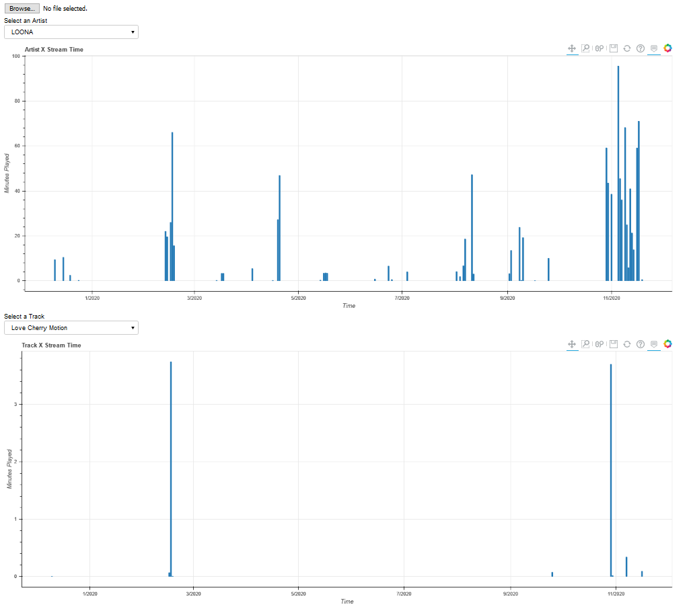

Release v0.1 and Future Plans
(20210219)
- As of now, Extract Spotify is a standalone bokeh server hosted with Heroku. Users have to download their Spotify data first, and then uploading it to the server which will display a timeline for when you listened to a particular artist or song and the corresponding stream minutes for that day.
- Future plans will be to use the Spotify API so users don't have to download any sensitive data and can directly log in with Spotify. It will also allow for more statistics and data to work with.
